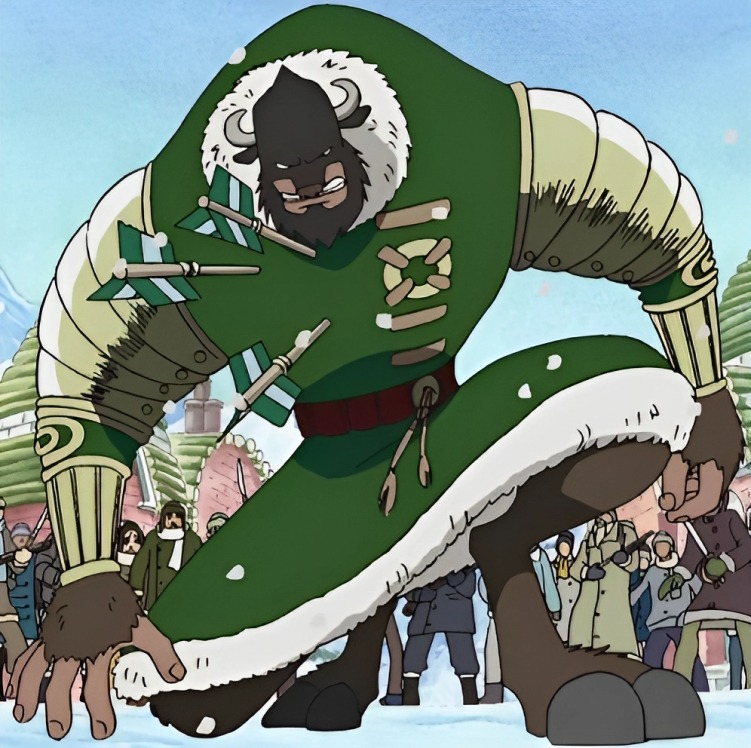
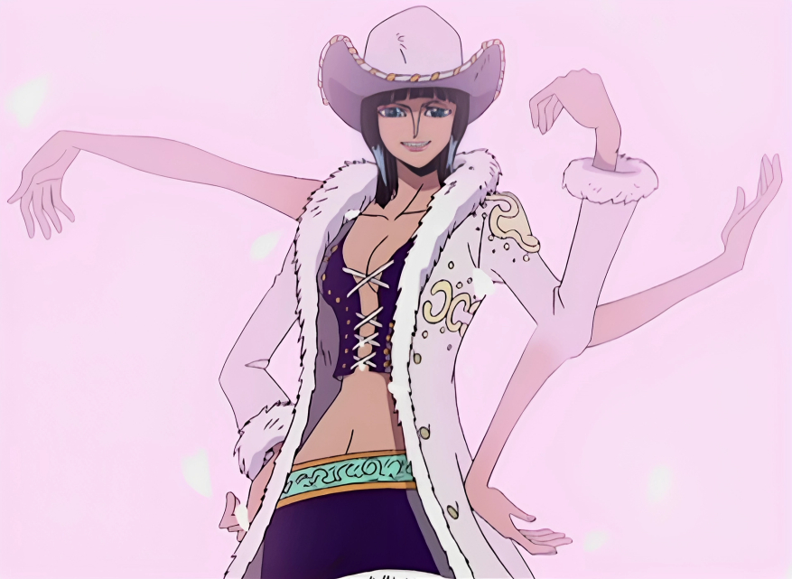

Devilfruit types
-
Logia
It is the rarest of the three Devil Fruit types. Those who have eaten a Logia fruit are granted the power to transform their body's composition into a natural element at will, as well as create and control it.
-
Zoan

It is one of the three Devil Fruit types. This type of Devil Fruit allows a user to transform into an animal species at will, or an inter-species hybrid.
-
Paramecia

It is one of the three Devil Fruit types, being the most common and diverse. Fruits of this type allows the consumer to achieve one of a large variety of abilities that enables them to become "superhuman" or perform a superhuman feat.